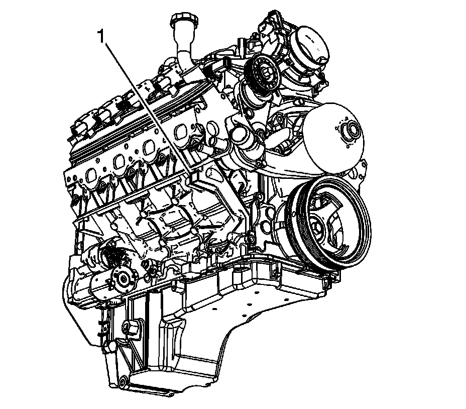

Engine Mount Replacement - Right Side (1500 LC9/LMG/LY5/L76/L92)
Engine Mount Replacement - Right Side (1500 w/RPOs LC9/LMG/LY5/L76/L92)
Removal Procedure
Notice: When raising or supporting the engine for any reason, do not use a jack under the oil pan, any sheet metal, or the crankshaft pulley. Due to the small clearance between the oil pan and the oil pump screen, jacking against the oil pan may cause the pan to be bent against the pump screen. This will result in a damaged oil pickup unit.
1. Remove the air cleaner outlet duct.
2. If the vehicle is equipped with four wheel drive (4WD), remove the front drive axle. Refer to Differential Carrier Assembly Replacement.
3. If the vehicle is equipped with 4WD, remove the front drive axle bracket bolts and bracket.
4. Remove the exhaust manifold.
5. Remove the air conditioning (A/C) compressor bracket.
6. Remove the engine mount to frame bolts (1).

Important: DO NOT raise and/or support the engine by the crankshaft balancer or oil pan.
7. Place an adjustable (screw type) jack to the tab (1) located on the engine block.
8. Working through the wheelhouse opening, remove the engine mount to engine bolts (1).
9. Using the adjustable jack, raise the engine slightly until there is enough clearance to remove the engine mount.
10. Remove the engine mount.
Installation Procedure
1. Position the engine mount to the engine.
Notice: Refer to Fastener Notice.
2. Working through the wheelhouse opening, install the engine mount to engine bolts (1).
Tighten the bolts to 50 N.m (37 lb ft).
3. Using the adjustable jack, lower the engine until the engine mount is sitting flush on the frame.
4. Remove the adjustable jack from the engine block.
5. Install the engine mount to frame bolts (1).
Tighten the bolts to 65 N.m (48 lb ft) starting with the middle bolt then either side bolt.
6. Install the A/C compressor bracket.
7. If the vehicle is equipped with 4WD, Install the front drive axle bracket and bolts.
Tighten the bolts to 90 N.m (67 lb ft).
8. If the vehicle is equipped with 4WD, Install the front drive axle. Refer to Differential Carrier Assembly Replacement
9. Install the exhaust manifold.